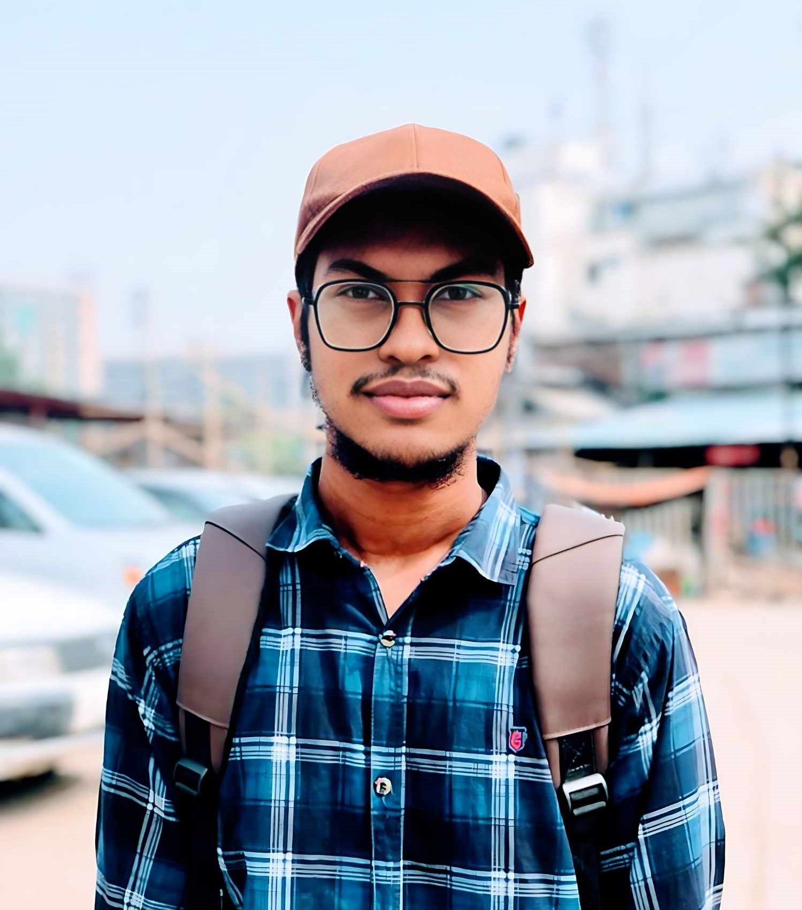

Syed Md Tohidul Islam
Hello, everyone my name is Syed Md Tohidul Islam. I'm excited to share a bit about myself with you today.
I am currently working as a Business Process Officer
at My Outsourcing ltd
My hometown is Narsindi, but I'm currently residing in Badda Notun Bazar
In addition to my professional role, I am also a student.
I have completed my 7th semester of a Diploma in Engineering at Borak Polytechnic Institute.
Why Full Stack Web Development?
Firstly, the demand for web design and development skills is incredibly high
On the development side,
I enjoy bringing designs to life with functionality and interactivity.
Another great benefit is the flexibility. Many web designers and developers work remotely or freelance,
which allows for a better work-life balance and the freedom to work from anywhere.
Why Shikhbe Shobai?
Shikhbe shobai teaching me the skill i need to thrive and earn, now and in the future.
They offer me project base learning + life time free support.
About My Mentor
I'm learning full stack web development from Farid Rony sir because of his over decades of experience and expertise in creating and customizing e-commerce solutions.
His hands-on teaching approach at Shikhbe Shobai ensures I gain real-world skills and industry insights.
With His guidance, I'm confident about my future in web development.
My Goal
As a full stack web development learner,
my future goal could be to specialize in a key technology stack,
build a robust project portfolio, and stay updated with emerging trends to advance my career.